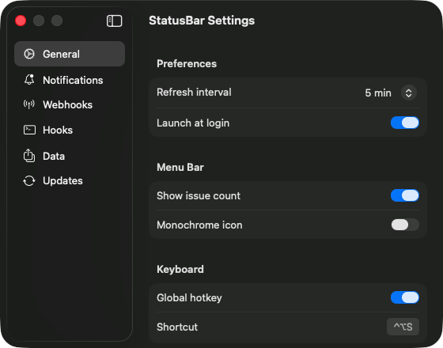

docs
Everything in StatusBar is scriptable. Push alerts where your team lives, run scripts on status events, and drive the app from anything that can open a URL.
automate
Push status change alerts to Slack, Discord, Microsoft Teams, or any HTTP endpoint. Configure multiple webhooks in Settings → Webhooks.
| Platform | Payload shape |
|---|---|
Slack | Block Kit — { "attachments": [{ "color", "blocks" }] } |
Discord | Embeds — { "embeds": [{ "title", "description", "color", "fields" }] } |
Teams | Adaptive Card — { "type": "message", "attachments": [{ "content": { "type": "AdaptiveCard" } }] } |
Generic | Flat JSON — { "source", "title", "body", "severity", "event", "url", "timestamp", "components" } |
Webhooks fire on every status change. Each webhook has an enable/disable toggle and a 10-second request timeout.
Drop executable scripts into the hooks folder and they run automatically on status events. Trigger CI pipelines, write to logs, post to APIs—anything you can script.
chmod +x my-hook
$STATUSBAR_EVENT to filter
#!/bin/bash
# Log status changes to a file
[ "$STATUSBAR_EVENT" = "on-status-change" ] || exit 0
LOG="$HOME/Library/Logs/StatusBar/hooks.log"
mkdir -p "$(dirname "$LOG")"
echo "[$(date)] $STATUSBAR_SOURCE_NAME: $STATUSBAR_TITLE" >> "$LOG"| Event | When |
|---|---|
on-status-change | Source status severity changes |
on-refresh | All sources finish refreshing |
on-source-add | A new source is added |
on-source-remove | A source is removed |
| Variable | Events |
|---|---|
STATUSBAR_EVENT | All |
STATUSBAR_SOURCE_NAME | status-change, add, remove |
STATUSBAR_SOURCE_URL | status-change, add, remove |
STATUSBAR_TITLE | status-change |
STATUSBAR_BODY | status-change |
STATUSBAR_SOURCE_COUNT | refresh |
STATUSBAR_WORST_LEVEL | refresh |
A full JSON payload is also piped to stdin. Scripts can be any language—just add a shebang and make them executable. 30-second timeout per execution.
Control the app from Terminal, browsers, Raycast, Alfred, or macOS Shortcuts using statusbar:// deep links.
open "statusbar://open"open "statusbar://open?source=GitHub"open "statusbar://refresh"open "statusbar://add?url=https://status.openai.com&name=OpenAI"open "statusbar://remove?name=GitHub"open "statusbar://settings?tab=webhooks"Full Cocoa Scripting dictionary. Query status, refresh, add and remove sources from Script Editor, JXA, osascript, or any OSA-compatible tool.
osascript -e 'tell application "StatusBar" to get name of every source'
osascript -e 'tell application "StatusBar" to get worst status'
osascript -e 'tell application "StatusBar" to refresh'Open Script Editor → File → Open Dictionary → StatusBar to browse the full scripting dictionary.
tell application "StatusBar"
-- Read properties
get name of every source
get status of source "GitHub"
get worst status
get issue count
-- Actions
refresh
add source "https://status.openai.com" named "OpenAI"
remove source "OpenAI"
end tellterminal
The app writes a status snapshot to ~/.cache/statusbar/status.json on every refresh. The bundled CLI reads it instantly — and anything else on your Mac can too.
Bundled with the app. Link it once, then query, script, and wait on statuses from any shell.
sudo ln -sf /Applications/StatusBar.app/Contents/MacOS/statusbar-cli \
/usr/local/bin/statusbarstatusbar status # all sources, colored, exit 0/1
statusbar status github # one source
statusbar status --json # machine-readable
statusbar wait npm && npm publish # block until recovery
statusbar prompt # "●" or "▲1" for promptsDrop a .statusbar file in a repo (one source name per line) and status/prompt scope to that project’s upstream dependencies.
# .statusbar — upstream deps for this repo
GitHub
npm
VercelOne glyph in your status line: ● when clear, ▲1 when something's up.
# ~/.config/starship.toml
[custom.statusbar]
command = "statusbar prompt"
when = true
format = "[$output]($style) "
style = "bold green"# ~/.tmux.conf
set -g status-right '#(statusbar prompt) %H:%M'
set -g status-interval 60# ~/.config/sketchybar/plugins/statusbar.sh
#!/bin/bash
sketchybar --set "$NAME" label="$(statusbar prompt)"StatusBar exposes App Intents: Get Worst Status, Get Source Status, and Refresh Sources. Wire them into Shortcuts automations, Focus modes, or just type “status” into Spotlight.
desktop
The status overview on your desktop or in Notification Center — powered by the same snapshot the CLI reads, refreshed on a timeline.
Launch StatusBar, then right-click your desktop and choose Edit Widgets… (or scroll to the bottom of Notification Center and click Edit Widgets). Search for StatusBar and drop it where you want it.
Small shows the tick strip with the issue count and the worst source. Medium lists up to six sources with their current state. Both update within a few minutes of every refresh.
catalog

Open Settings and click + to add any status page by name and URL. The app auto-detects the provider — Atlassian Statuspage, incident.io, Instatus, or Gatus. You can also import a JSON file to add many at once.
Select services below, export as JSON, then import the file in StatusBar via Settings → Data → Import Sources.